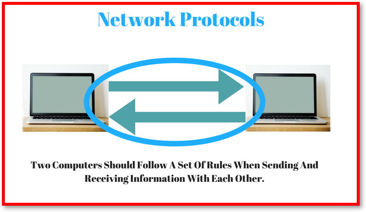
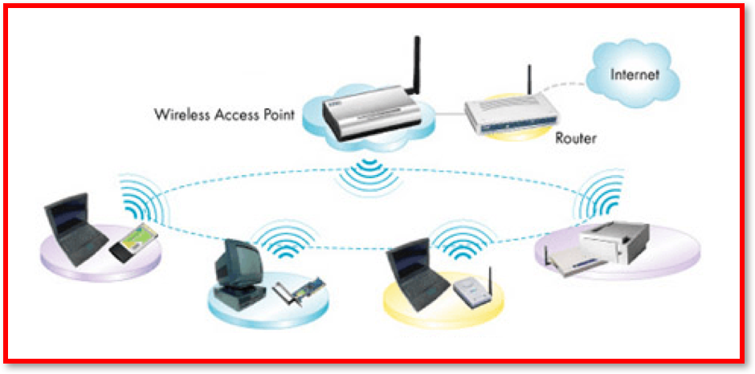
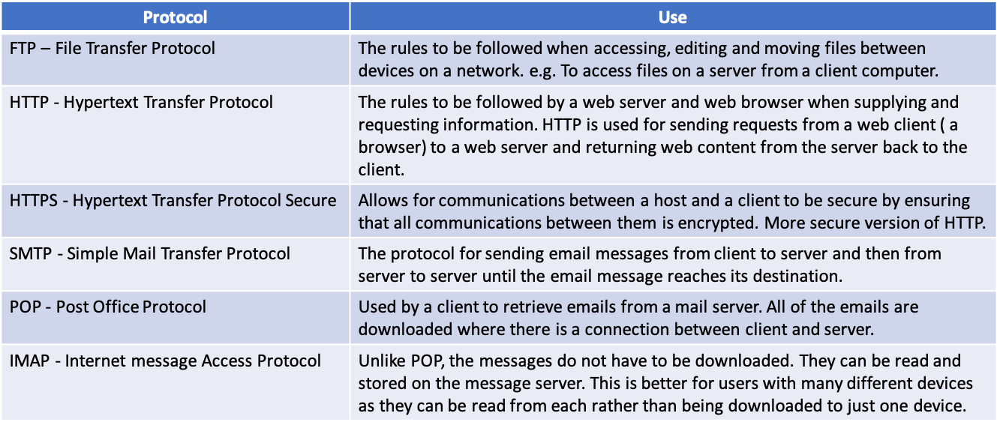
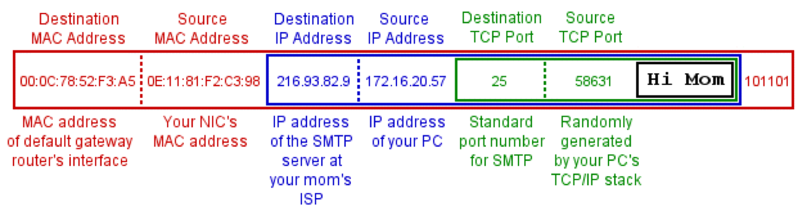
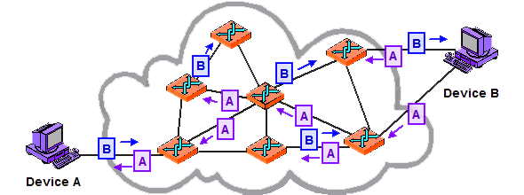

3.5.2 Network Protocols
Table of Contents
1 Network Protocols
Learn It: What are Protocols?
- Network Protocols are the
rulesandstandardsthatgovernhow a devices communicates on a network. - Network protocols govern all aspects of network communication from sending and receiving messages, to formatting files for different types of messages.
- Without protocols,
communicationsbetween computers deviceswould be impossible.
- A network protocol will specify, for example:
- The format of data packets.
- The addressing system.
- Error-checking procedures used.
Learn It: Ethernet Protocol
 Ethernet Protocols
- The Ethernet refers to a
familyof related networking rules orprotocolswidely used inLocal Area Networks(LAN). - This is
set of rulesthatgovernshowdata framesareformattedready fortransmissionbetweencomputerson thesame network.- This is similar to polite human conversation, nodes wait until the connection is quiet before attempting to 'Speak' or transmit.
- Two nodes attempting to transmit simultaneously will stop and each will wait a random period of time before re-attempting transmission.
- Each Ethernet device has a unique
48-bit MAC addressand these addresses specify thesourceanddestinationof each frame. These are are usually displayed as a 12-digit hexadecimal number. - All new computers have
Ethernetinterfaces built-in to motherboards, and older machines can be fitted with NIC cards. - The standard network cable used with Ethernet are often referred to as
Ethernet cables. It usestwisted-pair coppercabling orfibre-optics.
Learn It: Wi-Fi
Wi-Fi
- Wi-Fi is also a
familyof related rules orprotocolsthat allow electronic devices toconnect,controlandtransmit dataon a wireless local area network (WLAN). - Devices which can use Wi-Fi technology include; personal computers, games consoles, smartphones, digital cameras, smart home devices and tablet computers.
- Wi-Fi compatible devices can connect to the Internet via a
wireless LANand aWireless Access Point (WAP). - The WAP receives data from a network via its
physical connection. Thetransmitterthenconvertsthisdataintoradio waveswhich are thentransmitted. - Any device on the network
receivesthisradio signalvia aWi-Fi adaptorwhich allows it tocommunicateordownload datafrom the data source. - This also works in the reverse direction when a device wishes to send data over the network to another computer.
- In 1999, the Wi-Fi Alliance was established to set the international standards for network connections.

Learn It: TCP/IP and UDP Protocols
- TCP/IP consists of two very important and
separate protocolswhich dictate how data is sent between networks.
The two protocols serve the following functions:
- Transmission Control Protocol (TCP) is a
transport layer protocolthat sets therulesfor how devices connect on the network. It’s in charge ofsplittingthedataintosmaller numbered piecescalledpacketsthat allows it to be transported. TCP thenreassemblesthepacketsback into theoriginal dataonce they reach the receiving device. It alsodetectserrorsandresendslost packets. The sending device gets aconfirmationwhen the transfer is complete. - Internet Protocol (IP) is an
Internet layer protocolthat isresponsibleforpacket switching. IP is thestandardset ofrulesused to ensure that computers on the Internetsend informationto thecorrect address. Every computer on a network must have its ownunique addressknown as anIP address. The IP protocolidentifiesthe location of a device on the Internet androutesthe individual packets from source to the destination viarouters.
- User Datagram Protocol (UDP) uses a
simpleconnectionless transmission model where data issplitintopacketswithout numbering them. They arereadby thereceiving devicein the order that they arrive - Even if that's not the order they were sent. With UDP, computer applications can send messages referred to asdatagramsto other hosts on an IP network. It is an alternative to TCP but hasno error checkingorcorrection.
TCP Versus UDP
- UDP is suitable for applications that need
fast, efficient transmission, e.g. Online gaming sessions, live video streaming (Video quality can be poor due to missing packets, but is faster and smoother for live video streaming). - TCP is better when you need a
reliable connection, for example, downloading files, sending data or emails. Missing data packets could cause files to become corrupt and unreadable.
Other Protocols 
Learn It: Data Packets and Packet Switching
Data Packets Explained Video
Data Packets
- We have already learned that most networks use TCP/IP as the network protocol, or set of rules for communication between devices, and the rules of TCP/IP require information to be split into small pieces called
packetsthatcontainboth asegment of datato be transferred and theaddresswhere the data is to be sent. - Files could be million of bytes in size, which is
too largeto send in one go, which is whyfilesarebroken upintopackets. - Each packet has an average size of about
1.5KB. - IP addresses
identifyeach connected device. - MAC addresses
identifyRouters, default gateways and device NICs.

- A Packet Consists of:
- A Header containing the
sourceanddestination addressesand thepositionof this packet in the complete message or file. - The Body containing part of the complete message
data(known as the payload). - A Footer (also known as the trailer) that informs the receiving device that it has reached the end of the packet and can also be used for
error checkingto ensure the complete packet has been delivered intact.
- A Header containing the
Packet Switching
- The packets are then sent out on their various journeys to their recipient computer. They do not all follow the same route. In fact, they do not all necessarily arrive in the correct order, but because they are labelled the receiving computer can put the packages back together in the correct order.
- The delivery of the packets is accomplished by devices called
Routers. The routers direct the packets along the best route depending on network traffic.

Badge It: Exam Questions
Silver - Answer the following questions:
- Define the term network protocol? (2 Marks)
- State which would be the most suitable protocol in each of the
following situations. Select one in each case, from the following:
TCP/IP HTTP HTTPS FTP IMAP SMTP
- i) Making a payment securely when purchasing something over the Internet. (1 Mark)
- ii) Transferring a file to another computer on a wide area network. (1 Mark)
- iii) Transferring an email from one server to another server. (1 Mark)
Upload to Fundamentals of Computer Networks - Network Protocols: Silver on BourneToLearn
Badge It: Exam Questions
Gold - Answer the following questions:
- Joe is live streaming a football match over the Internet to his computer.
- a) Explain why Joe's computer needs an IP address to communicate on the Internet? (2 Marks)
- b) Would it be better to use TCP or UDP when sending the data packets to Joe's computer? Explain your answer. (5 Marks)
Upload to Fundamentals of Computer Networks - Network Protocols: Gold on BourneToLearn
Badge It: Exam Questions
Platinum - Answer the following questions:
- Jane sends an email to Joe over the Internet using her smartphone. Joe receives the email on his laptop.
- a) Explain why Jane and Joe's device need IP addresses to connect to the Internet? (2 Marks)
- b) Jane's email is split into packets and sent over the network using packet switching. Outline the possible actions of Joe's laptop and Jane's smartphone when:
- i) One of the packets is lost in transit? (3 Marks)
- ii) One of the packets is corrupted in transit? (3 Marks)
Upload to Fundamentals of Computer Networks - Network Protocols: Platinum on BourneToLearn